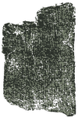
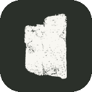
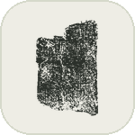

Design options
Flatter takes on the rubbing mark, and four working prototypes for reading the English of different traditions side by side.
Logo · flatter rubbing
Current
The live mark: the scan in greys.

Carved
A solid stone with only the brightest letter marks cut out. The calmest at small size.


English side by side
The problem. The sheet already lines the traditions up verse by verse, but only in their own scripts and languages, which most readers cannot compare. English exists for every tradition, yet the sheet shows one English at a time, chosen from a menu. Comparing the Pāli’s English with the Chinese’s English means switching back and forth and holding one in memory.
What is really going on. Every column is a tradition, and every tradition now has two faces: its original and its English. The single English column and its menu were a stand-in for that second face, and they mix two questions, which tradition and which face, into one control. Duplicating columns makes the mix worse. The prototypes below instead give each column its second face directly, so the sheet’s existing strengths (alignment, dragging, hiding) carry over unchanged.
Common to all four. The English column always reads from the Pāli, and its menu goes away. In every prototype you can hold E to see the whole sheet in English, then let go to return: a quick check that changes nothing.
- A · Flip the stone
One switch in the header, Original | English, turns every tradition column into its English at once. The separate English column steps aside, because the Pāli column now is the English. Your “translate the whole stone” idea, as a labelled two-way switch so its state is always readable.
- B · Flip a column
Each tradition’s heading gets its own small Original | EN switch. Flip Chinese and Tibetan to English and leave the Pāli original beside them, or any mix. This replaces the menu under English: you no longer choose which tradition the English column translates; every column can speak English for itself.
- C · Both, line by line
Recommended. A three-way switch in the header: Original, Both, English. Both sets each tradition’s English in small italic directly under its own line, which works because every translation now matches its source line for line. Each heading can still be flipped on its own.
- D · Open one verse
Nothing changes until you ask. A quiet EN circle sits in the margin beside each verse; pressing it opens that one verse across every tradition with its English underneath, and pressing again closes it. Comparison is usually about a single verse, so this keeps the sheet quiet.